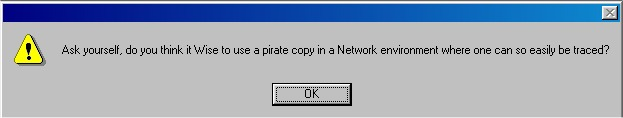

FTP Wolf 2.00-3.01
Spécifications
Nom du programme : FtpWolf 3.01 (le sérial calculé ici est valable aussi pour les versions 2.00 et ultérieures)
Genre : Utilitaire de recherche par Ftp
Outils
W32Dasm
Softice
Niveau : facile
Je fais rapidos un tut sur ce soft, car il m'a paru intéressant au niveau du test du sérial, quand on vient de s'enregistrer.
En effet, on trouve facilement et normalement le sérial sous Softice, et une fois enregistré avec, le soft est bien en version "complète" (je ne me rapelle pas trop mais je crois qu'en fait rien ne change entre le shareware et la full version, si ce n'est qu'on est enregistré et qu'il ya plus la msgbox du départ "This is a shareware version..."). Mais en le démarrant une fois enregistré(e) (<<---- pour les crackeuses ^_^), on a une vilaine msgbox qui nous dit (pleins d'horreurs...!) :

En fait, je vais vous montrer que le soft teste le sérial (avec lequel vous vous êtes enregistré) sur une caractéristique quand vous (re)lancez le soft. C'est pour cela qu'il vous est demandé de relancer le soft pour compléter l'enregistrement, une fois le sérial entré et validé. Et cette caractéristique testée ne se voit qu'au début du soft.
Let's Go ...
Bon, pour que tout ça soit plus clair, on va passer à la pratique. Lancez le soft, entrez votre nom et le sérial bidon habituel (Anubis / 12345 pour moi). Sous SI on pose un bpx hmemcpy et on appuye sur le Ok pour s'enregistrer.
Hop, nous voilou dans Choftiche... :o). On appuye sur F5 pour traiter le sérial, puis sur F10 pour rentrer dans le listing à l'écran, et on remonte toutes les dll et autres pour arriver dans FTPWolf en appuyant 9 fois sur F12. On arrive là :
:00404909 8D4580 lea eax, dword ptr [ebp-80] <---- on arrive ici
:0040490C 50 push eax
:0040490D 8D8500FFFFFF lea eax, dword ptr [ebp+FFFFFF00]
:00404913 50 push eax
:00404914 E8F05D0000 call 0040A709 <---- call qui part dans le traitement du sérial
On rentre dans le call 0040A709 par F8 et on arrive très vite sur :
:0040A727 803846 cmp byte ptr [eax], 46 <---- compare le 1er caractère de notre sérial avec "F" (46 en hexa)
:0040A72A 0F85F3000000 jne 0040A823 <---- on se fait éjecter si c'est pas bon
:0040A730 80780157 cmp byte ptr [eax+01], 57 <---- compare le 2ème caractère de notre sérial avec "W" (57 en hexa)
:0040A734 0F85E9000000 jne 0040A823 <---- on se fait éjecter si c'est pas bon
:0040A73A 50 push eax
:0040A73B 8D45E4 lea eax, dword ptr [ebp-1C]
:0040A73E 50 push eax
:0040A73F E8EC080000 call 0040B030
:0040A744 8D45E4 lea eax, dword ptr [ebp-1C]
:0040A747 6A2D push 0000002D <---- tiens, tiens, un trait d'union "-" (2D en hexa)
:0040A749 50 push eax <---- eax contient notre sérial
:0040A74A E821080000 call 0040AF70 <---- call qui fait quelquechose avec le "-" et notre sérial
Donc, ce call 0040A709 commence par regarder si notre sérial s'écrit FWxxxxx où xxxxx est la suite du sérial. Si notre sérial ne commence pas comme cela, alors on se fait éjecter avec les sauts jne 0040A823, et le soft ne continue même pas à traiter le reste du sérial. Quant au "-", on peut émettre l'hypothèse que le sérial commence avec "FW-", donc pour pouvoir continuer on va changer notre sérial en FW-12345 et recommencer le processus de traçage.
En recliquant sur le bouton Ok pour s'enregistrer, et en retraçant, on passe cette fois la comparaison du "F" et du "W" sans problèmes. On rentre dans le call 0040AF70 et on a cette routine très intéressante de recherche du "-" après pleins de calculs de XOR et de AND:
* Referenced by a (U)nconditional or (C)onditional Jump at Address:
|:0040AFCA(C)|
:0040AFE8 8B42FC mov eax, dword ptr [edx-04] <---- eax contient notre sérial, eax=312D5746 soit 1-WF (à l'envers dans les registres)
:0040AFEB 38D8 cmp al, bl <---- al=46 (le "F") et ebx=0000002D donc bl=2D (le "-")
:0040AFED 7436 je 0040B025 <---- si la comp est vraie, le zéro flag s'allume (z->Z), et on sort de la comp. Ici ce n'est pas le cas.
:0040AFEF 84C0 test al, al
:0040AFF1 74EF je 0040AFE2
:0040AFF3 38DC cmp ah, bl <---- test ah=57 (le "W") et bl=2D
:0040AFF5 7427 je 0040B01E <---- même chose qu'en 0040AFED
:0040AFF7 84E4 test ah, ah
:0040AFF9 74E7 je 0040AFE2
:0040AFFB C1E81 shr eax, 10 <---- décale des bits vers la droite. Permet de traiter la 2ème partie de eax avec al et ah.
:0040AFFE 38D8 cmp al, bl <---- que disais-je... le soft trouve ici la place de notre "-"
:0040B000 7415 je 0040B017 <---- contrairement à 0040AFED ici on sort de la routine puisque le "-" est trouvé.
:0040B002 84C0 test al, al
:0040B004 74DC je 0040AFE2
:0040B006 38DC cmp ah, bl <---- compare si le 4ème caractère est un "-"
:0040B008 7406 je 0040B010 <---- sort si c'est le cas
:0040B00A 84E4 test ah, ah
:0040B00C 74D4 je 0040AFE2
:0040B00E EB96 jmp 0040AFA6 <---- fin de la routine, sortie obligatoire
Plusieurs remarques sur cette routine. Tout d'abord, l'hypothèse de "FW-" est vérifiée. Oki! Le soft cherche la place du "-" dans notre sérial et la trouve en 3ème position puisqu'on devait mettre F et W en début de sérial. Ensuite, on remarque que le soft teste la place du "-" en 4ème position également, alors qu'à priori, il n'a rien à faire là d'après les infos que l'on a d'avant ce call. En effet, si on écrit notre sérial "FWx-yyyyy", qu'y aurait-il à la place du "x" ? Cette vérification en 4ème position va en fait prendre tout son sens dans la suite de ce tut (cf. le topo du début sur le soft), mais tout d'abord..... une page de pub! ;)
Finallement, on ressort du call 0040AF70, et on continue à tracer. Plus bas, vous trouverez le calcul du sérial d'après notre nom dont je me suis servi pour faire le keygen qui est en téléchargement sur le site (shmeitcorp.cjb.net à la rubrik keygenz, j'vous avais dit qu'il allait y avoir de la pub!! :D). Ce calcul commence juste après le call 0040AF70 et fini juste avant la partie ci-dessous, où on arrive au sérial qui apparait en 40A7FD.
* Referenced by a (U)nconditional or (C)onditional Jump at Address:
|:0040A7F3(C)|
:0040A7FD 50 push eax <---- eax contient un nombre en hexa. En faisant ?eax, on obtient 781602 qui est le sérial
* Possible StringData Ref from Data Obj ->"%li"
|
:0040A7FE 68A03A4100 push 00413AA0
:0040A803 8D45D0 lea eax, dword ptr [ebp-30]
:0040A806 6A14 push 00000014
:0040A808 50 push eax
:0040A809 E8320A0000 call 0040B240 <---- conversion décimale de la valeur hexa de eax
:0040A80E 46 inc esi
:0040A80F 8D45D0 lea eax, dword ptr [ebp-30]
:0040A812 56 push esi <---- d esi donne 12345, notre sérial
:0040A813 50 push eax <---- d eax donne 781602, le sérial calculé
:0040A814 E867140000 call 0040BC80 <---- call comparant les 2 sérials et nous tèje car on en a rentré un bidon (de sérial, pas d'huile!!!)
:0040A819 83C418 add esp, 00000018
:0040A81C F7D8 neg eax
:0040A81E 1BC0 sbb eax, eax
:0040A820 40 inc eax
:0040A821 EB02 jmp 0040A825
Au final, on a notre sérial officiel qui est donc FW-781602. On est bien enregistré, et une msgbox nous remercie en nous demandant de redémarrer le soft pour "compléter" l'enregistration. Au passage, le programme crée également 2 fichiers dans le répertoire d'installation du soft:
* fwolf.ini, qui contient ceci (je vous laisse remarquer):
packcount=20
format=2
filename=default.fws
browser=C:\PROGRA~1\INTERN~1\iexplore.exe
port=8080
sort=1
hits=0
accept=2
lastwarn=0
exact=0
files=50
news=0
next=1
upgrade=0
upgradenew=0
timeout=2000
newwin=0
licensee=Anubis
id=FW-781602
* default.fws, un autre fichier de config
Ensuite, on redémarre le soft, comme demandé, et là au grand malheur!!! on voit ceci:
Pour les incultes, je traduis: "Demandez-vous si c'est judicieux d'utiliser une copie pirate dans un environement réseau où tout un chacun peut être si facilement tracé?"
Alors là, c'est la catastrophe!!! On a beau chercher et refaire en détail les vérifs et les listings plus haut qui mènent au sérial, rien n'y fait. Rien n'explique cette suspicion, qui nous fait comprendre qu'on n'a pas le bon sérial. Et pourtant ?!?!! Le soft nous a bien enregistré avec FW-781602.... Ben, vi :( Il faut se rendre à l'évidence et sortir son carnet de chèques pour commander une licence, car ils nous ont eu! Qu'ils sont fort chez TrellianSoftware !!!!
Bon allez, on arrète le délire et on se remet au boulot. Réfléchissons, qui dit msgbox, dit réaction suite à un test. Donc, la msgbox est la conséquence d'un test (un "if" quoi) que le soft a fait. Ce test étant mauvais (pour nous), il nous balance cette msgbox. Très certainement, le test est en rapport avec notre sérial, sinon le soft nous dirait "Plus de papier dans l'imprimante" ou une connerie de ce genre... Donc pour tomber sur ce test dans softice, on va rentrer au moment ou il veut afficher la msgbox en utilisant un bpx messageboxa, puis on va remonter le listing pour voir si on ne trouve pas un endroit judicieux, de préférence avant le test.
On ferme donc le soft, si ce n'est pas déjà fait, on efface tous les anciens bpx (bc *) et on pose le bpx messageboxa sous SI, puis on lance le soft. SI pointe le bout de son nez. On se retrouve alors via une requête de FTPWolf dans user32!, puisque c'est lui qui gère les affichages des msgbox. On attérit sur l'API MessageBoxA en 015F:BFF5412E:
USER32!MessageBoxA
015F:BFF5412E 55 push ebp <---- on se retrouve ici
015F:BFF5412F 8BEC mov ebp,esp
015F:BFF54131 6A00 push 00
015F:BFF54133 FF7514 push dword ptr [ebp+14] |
015F:BFF54136 FF7510 push dword ptr [ebp+10] |=> Paramètres de la msgbox passés
015F:BFF54139 FF750C push dword ptr [ebp+0C] |=> dans l'ordre inverse (voir le cours des APIs)
015F:BFF5413C FF7508 push dword ptr [ebp+08] |
015F:BFF5413F E8D8ECFFFF Call USER32!MessageBoxA <---- affichage de la msgbox
015F:BFF54144 5D pop ebp
015F:BFF54145 C21000 ret 0010 <---- ça c'est intéressant!!!
Entre parenthèses, si vous faites défiler l'ascenceur dans la fenêtre CODE de SI, vous voyez toutes les APIs de USER32.exe.
Bien! ce que l'on veut donc, c'est de retourner dans le soft avant l'ordre d'affichage de la msgbox. Autrement dit, ça serait pas mal de jeter un oeil avant ce qu'il y a aprés le ret 0010 en 015F:BFF54145 (tout le monde me suit??!? ;). Donc on efface le bpx messageboxa (bc *), et on pose un bpx après la msgbox, mais avant la fin de l'API (par exemple en 015F:BFF54144 où il y a le "pop ebp"). On posera donc bpx 015F:BFF54144. Mettez bien le "015F:" avec.
On quitte softice avec F5, la vilaine msgbox apparait, on clique sur son bouton Ok, et SI réapparait juste après à l'adresse prévue. On appuye sur F10 pour retourner au listing, et on trace ligne à ligne. Après le "ret 0010", on retourne tout naturellement à FTPWolf à l'adresse 00403812:
* Reference To: USER32.MessageBoxA, Ord:01BEh
|
:004037E7 8B3550E44100 mov esi, dword ptr [0041E450]
:004037ED 85C0 test eax, eax
:004037EF 7451 je 00403842
:004037F1 803800 cmp byte ptr [eax], 00
:004037F4 7421 je 00403817
:004037F6 8A4802 mov cl, byte ptr [eax+02]
:004037F9 80F930 cmp cl, 30
:004037FC 7C05 jl 00403803
:004037FE 80F939 cmp cl, 39
:00403801 7E14 jle 00403817
* Referenced by a (U)nconditional or (C)onditional Jump at Address:
|:004037FC(C)
|
:00403803 6A30 push 00000030
:00403805 68BC494100 push 004149BC
* Possible StringData Ref from Data Obj ->"Ask yourself, do you think it "
->"Wise to use a pirate copy in a "
->"Network environment where one "
->"can so easily be traced?"
|
:0040380A 6898214100 push 00412198
:0040380F 53 push ebx
:00403810 FFD6 call esi
:00403812 A170494100 mov eax, dword ptr [00414970] <---- on arrive ici
Maintenant, tout ce joue ici. Regardez plus haut... De 00403803 à 0040380F, vous avez des pushs. Ce sont les paramètres de l'API MessageBoxA dont je parlais un peu plus haut. Si vous faites d 412198, vous obtenez la phrase en orange (Ask yourself...). Et si on remonte juste au-dessus, on a des "cmp" et des sauts. AAAAaaaaaaaaahhhh!! Mais c'est-il que ça ressemble à ce que l'on voulait rechercher tout à l'heure! :D
On va aller voir ça de plus près, mais ceux qui ont un oeil averti auront déjà compris ces quelques lignes... On efface donc tous les bpx, et on pose un bpx à une adresse au-dessus de toutes ces lignes, par exemple bpx 4037E7. Ainsi on pourra tracer ces lignes avec F10.
Une fois cela fait, on trace donc, et on obtient cela (je rappelle que le sérial est FW-781602):
* Reference To: USER32.MessageBoxA, Ord:01BEh
|
:004037E7 8B3550E44100 mov esi,dword ptr [0041E450] <---- on arrive ici
:004037ED 85C0 test eax,eax
:004037EF 7451 je 00403842
:004037F1 803800 cmp byte ptr [eax],00 <---- eax contient notre sérial, s'il est vide...
:004037F4 7421 je 00403817 <---- ...on saute la routine!
:004037F6 8A4802 mov cl,byte ptr [eax+02] <---- met le 3ème caractère du sérial dans cl
:004037F9 80F930 cmp cl,30 <---- compare ce 3ème caractère à "0" (30 en hexa)
:004037FC 7C05 jl 00403803 <---- si inférieur à "0" (dans une table ASCII), on affiche la phrase orange dans la msgbox
:004037FE 80F939 cmp cl,39 <---- compare ce 3ème caractère à "9" (39 en hexa)
:00403801 7E14 jle 00403817 <---- si supérieur à "9" (dans une table ASCII), on affiche la phrase orange dans la msgbox
* Referenced by a (U)nconditional or (C)onditional Jump at Address:
|:004037FC(C)
|
:00403803 6A30 push 00000030
:00403805 68BC494100 push 004149BC
* Possible StringData Ref from Data Obj ->"Ask yourself, do you think it "
->"Wise to use a pirate copy in a "
->"Network environment where one "
->"can so easily be traced?"
|
:0040380A 6898214100 push 00412198
:0040380F 53 push ebx
:00403810 FFD6 call esi
:00403812 A170494100 mov eax, dword ptr [00414970]
CONCLUSION!!! Et bien dans notre cas, le soft teste à son lancement si le 3ème caractère du sérial est compris entre 0 et 9 (inclus). Cela signifie que le soft teste un sérial du type "FWX-YYYYYY" où X=0,1,2,...,8,9. Voilà pourquoi notre sérial "officiel" FW-781602 déclenche l'apparition de la vilaine msgbox (et aussi pourquoi il n'est pas correct!). C'est également la raison pour laquelle il y avait le test de la présence du "-" en 4ème position (voir plus haut)!!
Donc maintenant, on a toutes les informations pour notre sérial valide. On va recommencer la procédure de recherche du sérial en entrant par exemple "FW1-12345" et le soft va recalculer notre sérial qui sera OFFICIEL cette fois et pas "officiel" ;o).
Avant tout, n'oubliez pas d'effacer le fichier fwolf.ini pour remettre le soft en version non-enregistrée. Effacez aussi vos bpx sous SI, et remettez un bpx hmemcpy avec (pour moi) Anubis et FW1-12345.
En traçant directement à la ligne 40A7FD (celle déjà mentionnée plus haut), on obtient cette fois-ci le bon sérial FW1-239496. Redémarrez le soft, et là... plus de vilaine msgbox (héhé!!!).
Vous vous demandez peut être (bonne question!!!) pourquoi on doit se retaper la pêche au sérial une fois notre "1" introduit après "FW" ?! Et bien, tout simplement parce que tous les caractères avant le "-" (donc FW, FW1, FW2...) interviennent dans le calcul du sérial.
De même, vous pouvez prendre un autre nombre que "1" après "FW", mais lors de mes tests pour la programmation du keygénérateur, j'avais des plantages pour "FW8" et "FW9".
Pour terminer ce tut, je voudrais dire que c'est une bonne petite feinte de la part des programmeurs de FTPWolf, mais qu'avec 2 secondes de reflexion, ça ne tient pas long la route... En revanche, c'est un soft facile et intéressant pour faire un tut sur ce calcul du sérial en 2 parties (une au niveau de l'enregistrement, et une au lancement du soft).